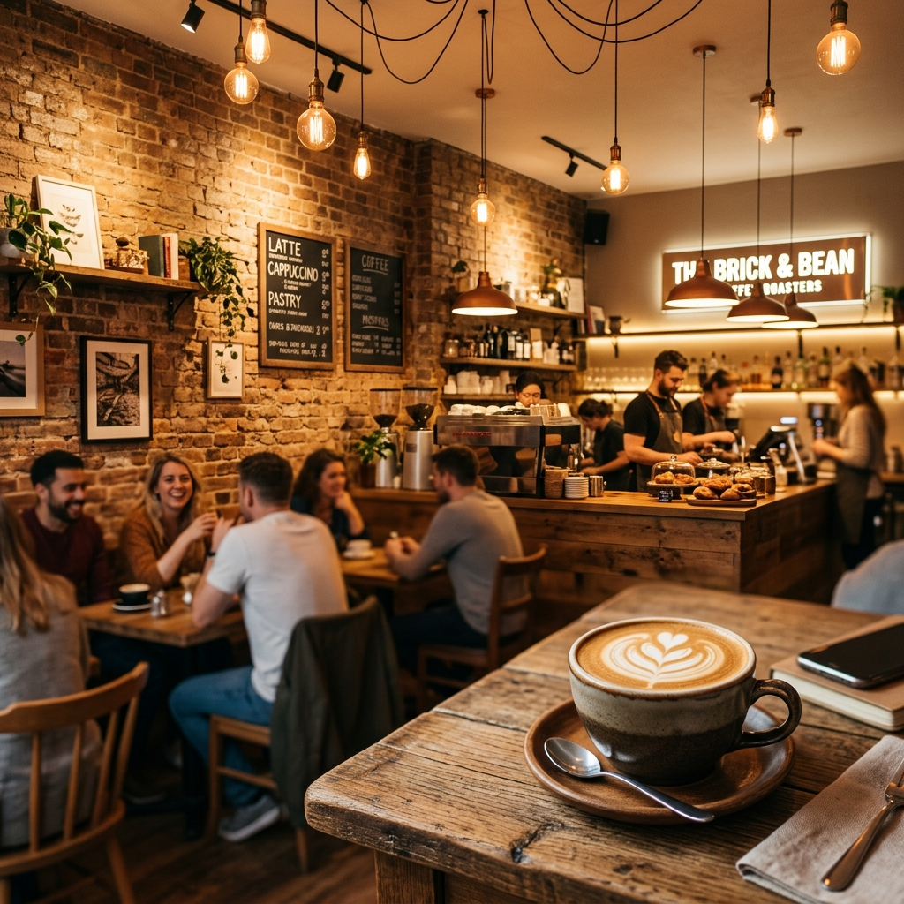

Çok Satan
İmza Cappuccino
Zengin çift espresso, kadifemsi buharlı süt ve bir tutam tarçın — en sevilen klasiğimiz.
Sıcak İçecek
2018'den Beri · Özel Kahve
El yapımı kahveler, özel pastalar ve sıcak anlar — hepsi bir çatı altında.

Amber & Roast, istisnai kahveye duyulan saf bir sevgiden doğdu. 2018 yılında Ali Kajeviç tarafından kurulan kafemiz, sevilen bir mahalle buluşma noktasına dönüştü — taze kavrulmuş çekirdeklerin aromasının sessiz sohbetlerle iç içe geçtiği bir yer.
Tedarik ettiğimiz her çekirdek etik ticaret kapsamındadır ve tek kökenlidir. Baristalarımız, her fincanı küçük bir sanat eseri olarak ele alan eğitimli uzmanlardır. İster sabah koşturmacasında olun ister öğleden sonra uzun bir mola verin, buradaki zamanınızın evinizde gibi hissettirmesini istiyoruz.
Müdavimlerimizi her sabah geri getiren seçkin tatların bir derlemesi.
Zengin çift espresso, kadifemsi buharlı süt ve bir tutam tarçın — en sevilen klasiğimiz.
Sıcak İçecek
Buz üzerine soğuk demleme espresso, ev yapımı karamel sos ve yulaf sütü.
Soğuk İçecek
Her sabah taze pişirilir, çıtır tereyağlı hamurda Belçika bitter çikolatası ile katman katman.
Kruvasan
Yoğun, nemli ve vazgeçilmez derecede lezzetli — bir Americano ile mükemmel uyum.
Tatlı
Ekşi maya ekmek üzerine ezilmiş avokado, poşe yumurta, filiz sebzeler ve pul biber.
KahvaltıTüm el yapımı kahvelerimizi, mevsimlik spesiyallerimizi ve mutfak favorilerimizi keşfedin.
Tüm Menüyü Gör